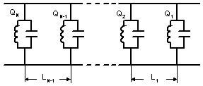
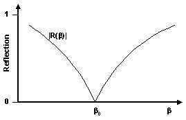
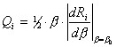
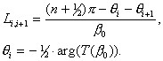
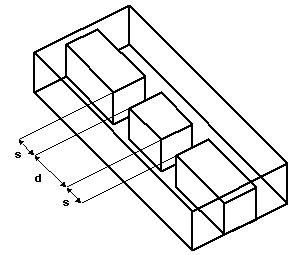
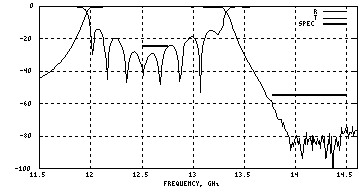

 | The filter can be represented as sequence of N lossless reactive resonant units separated by N-1 straight uniform waveguide sections of length close to 1/4-wavelength in the waveguide. Each resonator # i shows symmetric scattering matrix Si (b) with reflection function Ri (b) and transmission function Ti (b) , where b is waveguide propagation constant. |
 |
The reflection function of each resonator is smooth and monotonic over the filter pass-band and inverts into zero at the central frequency. Then the loaded Q-factor of the i-th resonator is determined from its reflection function as
  |
 | Physical realization of such a filter is based on finding such elements providing reflection zero at particular central frequency with variable Q-factor. Resonant iris and cavity of two regular H- plane irises [1] are commonly used to compose a 1/4-wave-coupled filter. Using modern software a wide variety of such resonant elements can be found and unusual filter structures can be built from them. For example, couple of slots in an evanescent-mode ridged waveguide behaves as reflection-zero resonator. Changing d-dimension changes central frequency and changing s-dimension changes Q-factor. |
The Q-values of resonators are selected in order to obtain the required response function. Those values are associated with g-values mentioned previously (see page about direct coupled filters ) by the following formula from [1] |
Generally, the algorithm to synthesize the filter dimensions looks more complicated than to synthesize a direct-coupled filter. It is also based on a “simulator” giving complex s-matrix as a function of the dimensions of the resonator. Let assume that the complex reflection coefficient is function of two dimensions x and y. Let the x-dimension is mostly controls resonant frequency while y-dimension mostly effects loaded Q. Changing y and simultaneously adjusting x to keep the resonant frequency at b0 we can obtain a table where for any y appropriate x and Q are found. For many cases such a table computed ones might be used for a big variety of filters of the same class. |
 | Quarter-wave-coupled filters are found little more stable for manufacturing and computational errors than the direct-coupled ones. So a filter built following this procedure may work right a way without tuning and adjustment. For example, a quarter-wave-coupled corrugated filter is built following the synthesized dimensions and it fits the spec mask. However more often the synthesized filter requires bandwidth adjustments and return loss equalizing. Bandwidth can be adjusted by correcting design bandwidth and central frequency. Return loss equalization can require an optimizer. |